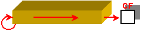

ITEEDU
5.2.5 移位操作指令
移位操作指令是一组经常使用的指令，它包括算术移位、逻辑移位、双精度移位、循环移位和带进位的循环移位等五大类。
移位指令都有指定移动二进制位数的操作数，该操作数可以是立即数或CL的值。在8086中，该立即数只能为1，但在其后的CPU中，该立即数可以是1··31之内的数。1、算术移位指令
算术移位指令有：算术左移SAL(Shift Algebraic Left)和算术右移SAR(Shift Algebraic Right)。
它们的指令格式如下：
SAL/SAR Reg/Mem, CL/Imm
受影响的标志位：CF、OF、PF、SF和ZF(AF无定义)。
算术移位指令的功能描述如下，具体功能下图(a)、(b)所示。
算术左移SAL把目的操作数的低位向高位移，空出的低位补0；
算术右移SAR把目的操作数的高位向低位移，空出的高位用最高位(符号位)填补。

(a)、SAL

(b)、SAR
例5.10 已知(AH)=12H，(BL)=0A9H，试给出分别用算术左移和右移指令移动1位后，寄存器AH和BL的内容。
解：用算术左移和右移指令移动1位后，寄存器AH和BL的结果如下表所示。| 操作数的初值 | 执行的指令 | 执行后操作数的内容 |
| (AH)=12H | SAL AH, 1 | (AH)=24H |
| (BL)=0A9H | SAL BL, 1 | (BL)=52H |
| (AH)=12H | SAR AH, 1 | (AH)=09H |
| (BL)=0A9H | SAR BL, 1 | (BL)=0D4H |
下面是学习和理解算术移位指令的控件。它简单、直观地表达了该移位指令的功能，通过它，学习者可准确地掌握计算机系统中该移位指令的含义。
在该控件中，操作者可随机生成第一操作数，也可自行输入之。为了便于比较，在执行指令前，把原操作数的内容存入“操作前的数据”中。
思考题：下面有两组指令序列，问每组指令执行后，寄存器AX的不会变化吗？SAL AX, 1
SAR AX, 1或
SAR AX, 1
SAL AX, 1